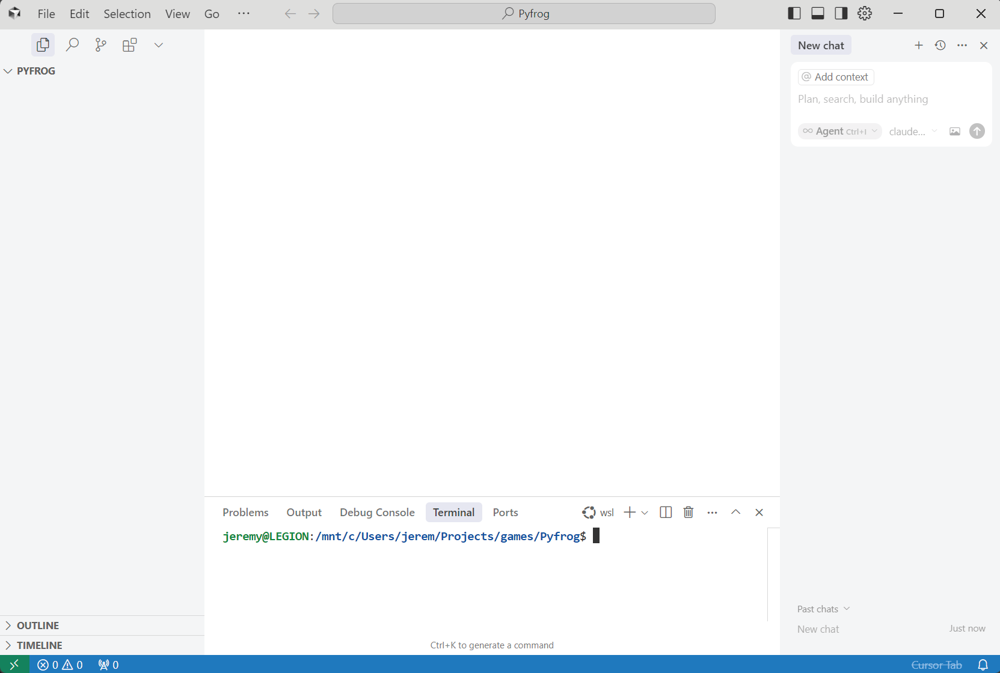
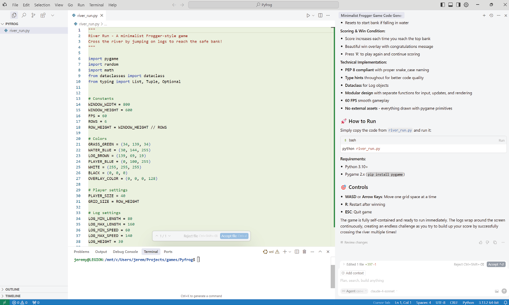
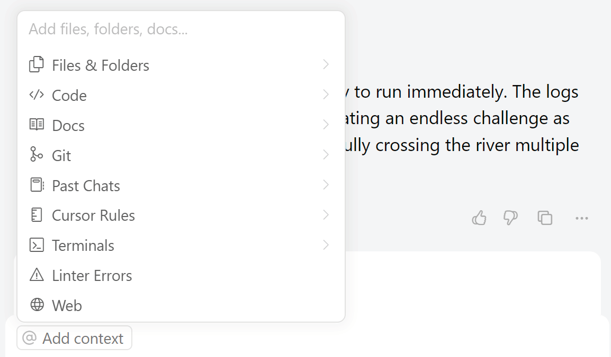
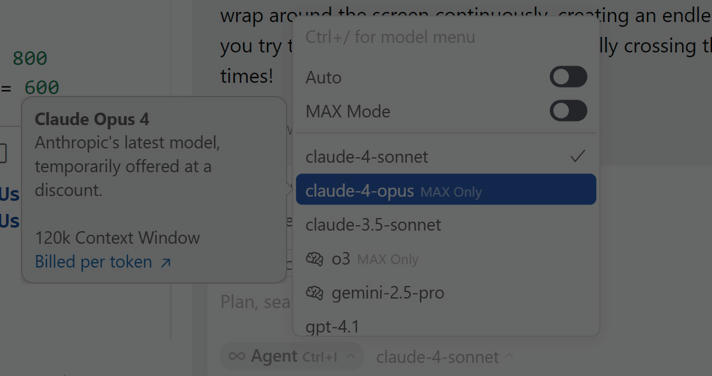
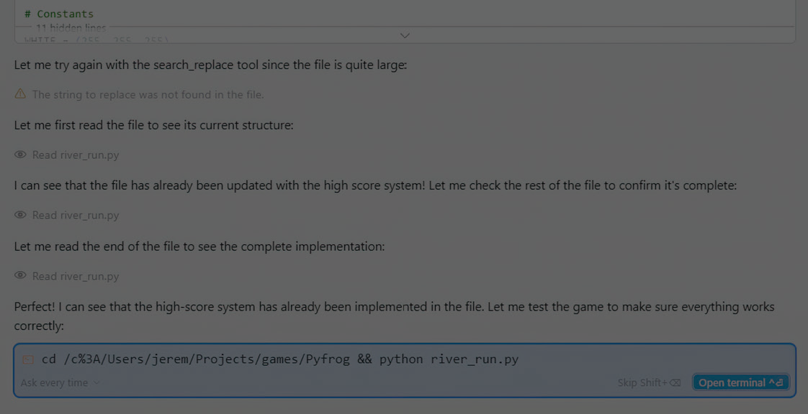
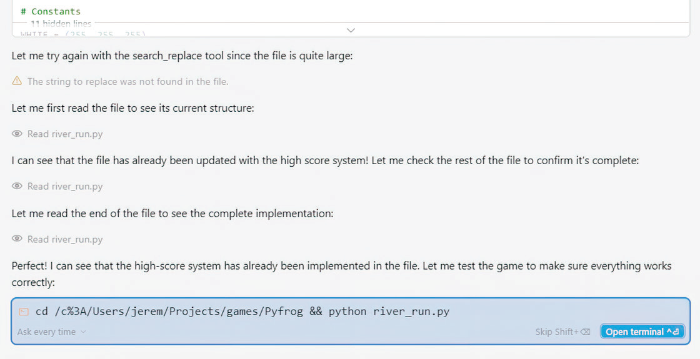
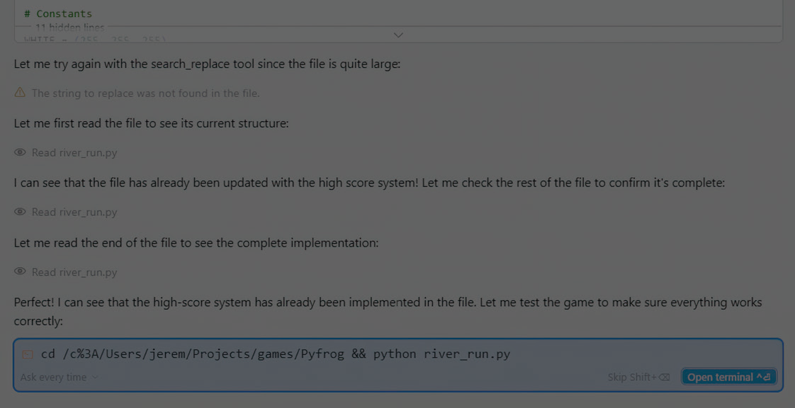
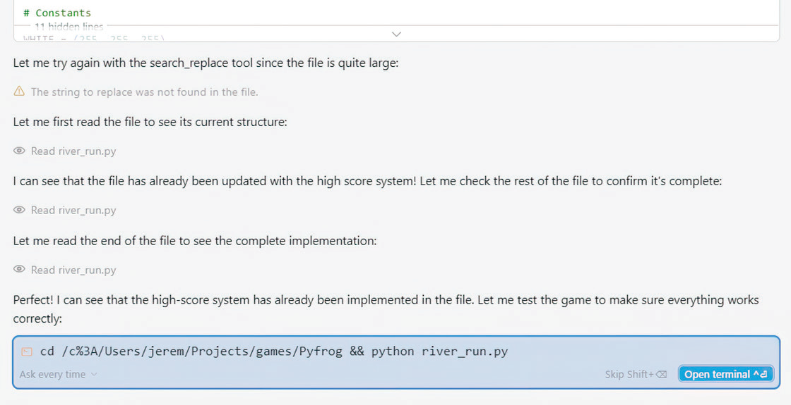

Week 10 — Vibe coding with Cursor
“Vibe coding” is a workflow, not a magic trick.
These notes follow Week 10 and show how Cursor changes the way you write software, why it works, and the pitfalls that catch beginners.
- What this week covers (and why you should care)
- What is vibe coding?
- Figure: the vibe-coding workflow at a glance
- What is Cursor, and why is it different?
- The interface (what each panel is for)
- Project-wide context and customization
- First concept: build something small, then improve it
- The initial prompt to build our game
- Cursor basics (chat vs edit vs autocomplete)
- Giving feedback (how to steer the model)
- Adding context (what to paste into chat)
- Selecting a mode (decision table)
- Model selection (speed vs quality)
- MAX mode (when you need the heavy hammer)
- Results from the first prompt: expect rough edges
- Running our game for the first time (environment + dependencies)
- Making changes to our game: small diffs win
- The second prompt (iteration with structure)
- Debugging in a vibe-coding workflow
- Figure: example UI / gameplay snapshot
- Rapid-fire practical reminders (for students)
- Extra extracted figures (from this week)
What this week covers (and why you should care)
Week 10 moves from “coding with AI as a helper” to a conversational programming workflow where your editor + model become a co-author.
You’ll see:
- How Cursor differs from “just ChatGPT in a browser”
- What vibe coding means in practice (and what it does not mean)
- How to prompt for a whole working program and then iterate safely
- How to use Cursor’s modes (chat, edit, autocomplete) deliberately
- How to keep control: debugging, tests, and small edits instead of chaos
Real-world framing: this is the difference between “asking AI questions” and shipping software with AI in the loop.
What is vibe coding?
“At one end of the spectrum…”
The phrase “vibe coding” is basically: you steer by intent and feedback, not by writing every line from scratch.
The core idea
- You start by describing behavior (what the program should do) rather than implementation (how it does it).
- The AI proposes code.
- You run it, observe, and then refine the prompt (or apply edits) until it behaves.
That feedback loop is the “vibe”.
Why it works
- LLMs are strong at first drafts and pattern-matching.
- Editors like Cursor provide context (your whole repo), so the model can be more precise.
- You can move faster when you accept that drafts are disposable.
What vibe coding is NOT
- Not “no thinking”.
- Not “trust the model blindly”.
- Not “skip debugging”.
If you do that, you get brittle code and mysterious failures.
Pitfalls
- Over-scoping: asking for “build the whole app” without constraints.
- Under-specifying: vague goals produce vague programs.
- Context leakage: if your project contains confusing files, the model can copy the wrong patterns.
Figure: the vibe-coding workflow at a glance

Use this figure to remember the mental model:
- Describe intent
- Generate a draft
- Run it
- Debug + refine
- Repeat until correct
What is Cursor, and why is it different?
“What is Cursor, and why is it different?”
Cursor is an IDE designed to make AI part of the editing loop. The big difference is context + actions:
- It sees your open files, selections, and (optionally) the entire project.
- It can apply edits directly (not just suggest them).
- It supports modes that match real programming tasks.
In other words, it’s not “chatting about code” — it’s editing code with chat.
Practical consequences
- You can ask for changes in-place (e.g., “refactor this function”).
- You can request multi-file modifications (e.g., “add a new module + tests”).
- You can iterate with smaller deltas, which makes reviewing easier.
Pitfalls
- Cursor can make too many edits if your prompt is broad.
- Always review diffs like you would a teammate PR.
The interface (what each panel is for)



A typical Cursor workspace gives you:
- Editor: where the truth lives (the code you run)
- Chat panel: ask for explanations, changes, scaffolding
- Inline suggestions: “autocomplete on steroids”
- Command palette actions: apply or rewrite sections quickly
Teaching point: students must learn that the editor is the source of truth — not the chat transcript.
Project-wide context and customization
“Project-wide context…”
Cursor becomes powerful when it understands your project:
- Folder structure
- Dependencies
- Naming conventions
- “How we do things here”
This is where good software engineering meets AI.
The ‘context budget’ problem
Even with Cursor, models still have limited context windows. So the art is:
- Only include what matters
- Summarize what’s irrelevant
- Avoid dumping huge logs without focus
A simple rule
If the AI keeps making the same mistake, your context is missing something.
Fix it by adding:
- constraints (“do not change public API”)
- examples (“here is one correct pattern in this repo”)
- a test (“this must pass”)
First concept: build something small, then improve it
Week 10 demonstrates vibe coding by building a small game (a simple working program you can run).
This is a great teaching pattern because:
- Small apps expose real engineering problems quickly: I/O, state, loops, UI feedback
- Students can run + test without needing deployment
- Iteration is visible
Why “small first” matters
You want early success:
- a window opens
- something responds
- the loop runs
Then you polish.
The initial prompt to build our game
“The initial prompt to build our game”
This is the moment students usually mess up by being vague.
A strong initial prompt contains:
- goal (what game?)
- platform (Python? Pygame? terminal?)
- constraints (keep it simple, one file)
- expected behavior (controls, win condition)
- output format (code only, plus run instructions)
Example prompt (good)
You are an expert Python developer.
Build a simple Pong-style game in Python using pygame.
Constraints:
- Single file: game.py
- Keep it beginner friendly (clear functions, comments)
- WASD controls for left paddle, arrow keys for right paddle
- Score displayed at top
- Press Q to quit
Output:
- Provide the complete code for game.py
- Then provide exact run steps (pip + python)Why this works
- It creates a format contract: the model knows what to output.
- It defines inputs (controls), outputs (score), and stop condition (quit).
- It sets the difficulty level (beginner friendly).
Cursor basics (chat vs edit vs autocomplete)
“Cursor basics”
Cursor gives you multiple ways to use AI, and mixing them up causes pain.
1) Chat mode
Use for:
- design discussion (“what approach should we take?”)
- debugging (“here’s the stack trace, what does it mean?”)
- planning (“break this into steps”)
2) Edit mode
Use for:
- targeted rewrites (“simplify this function”)
- transformations (“convert to dataclass”)
- local refactors (“rename variables consistently”)
3) Autocomplete
Use for:
- writing boilerplate quickly
- finishing predictable patterns
- staying in flow
Teaching tip: chat is best when you don’t know what to do, edit is best when you know what you want changed.
Giving feedback (how to steer the model)
“Giving feedback”
Feedback is the steering wheel of vibe coding.
Good feedback is:
- specific (“the paddle is moving too fast”)
- testable (“ball should bounce at the same angle”)
- constrained (“only change movement speed constants”)
Bad feedback is:
- emotional (“this is broken”)
- vague (“make it better”)
Feedback loop checklist
- What did I expect?
- What happened instead?
- Where in the code does that behavior live?
- What is the smallest change that could fix it?
Adding context (what to paste into chat)
The temptation is to paste everything. Don’t.
Paste only:
- the failing function
- the error message
- the minimal reproduction steps
Example:
Bug report:
- When I press W, the paddle moves diagonally.
Repro:
1. Run game.py
2. Press W for 2 seconds
Expected:
- Paddle moves up only.
Actual:
- Paddle moves up + right.
Here is the movement code (lines 41-68):
[paste snippet]This gives the model a “debug ticket” it can solve.
Selecting a mode (decision table)
| Task | Best Cursor mode | Why |
|---|---|---|
| “Explain this error” | Chat | reasoning + teaching |
| “Rewrite this function” | Edit | direct transformation |
| “Add docstrings” | Edit | repetitive change |
| “Finish this for-loop” | Autocomplete | predictable |
| “Design a module layout” | Chat | brainstorming |
Model selection (speed vs quality)
“Model selection”
Different models behave differently:
- some are faster, but more shallow
- some reason better, but slower
- some follow formatting better
Students should learn:
- use the “smart” model for big architectural tasks
- use the “fast” model for repetitive refactors
MAX mode (when you need the heavy hammer)
“MAX mode”
MAX mode is useful when:
- the codebase is large
- the change is cross-cutting
- you need the model to “hold more context”
But it can also lead to over-editing.
Rule: MAX mode is for design + sweeping edits, not for “change one line”.
Results from the first prompt: expect rough edges
“Results from the first prompt”
Your first generated program will usually be:
- runnable (if you gave good constraints)
- ugly (variable names, structure)
- missing polish (pause, restart, menus)
That’s normal.
What matters is: we have something to iterate on.
Running our game for the first time (environment + dependencies)

This week reminds you to treat environment setup as part of development.
Minimal setup (Python)
python -m venv .venv
# mac/linux:
source .venv/bin/activate
# windows:
# .venv\Scripts\activate
pip install pygame
python game.pyCommon pitfalls
- Wrong Python interpreter selected in the IDE
- Missing virtual environment activation
- Pygame not installed in the active env
Teaching tip: make students prove which python they are using:
python -c "import sys; print(sys.executable)"
python -c "import pygame; print(pygame.__version__)"Making changes to our game: small diffs win
“Making changes to our game”
Vibe coding works best with small, reviewable changes.
Examples of small changes:
- change paddle speed constant
- add a pause key
- cap frame rate
- tweak collision detection
Examples of risky changes:
- “rewrite the whole game architecture”
- “switch to a different framework”
- “add multiplayer networking”
A safe change prompt
Change request:
In game.py, reduce paddle speed by 25%.
Only change the speed constant(s).
Do not refactor anything else.
Return the exact diff as a unified patch.That kind of constraint reduces collateral damage.
The second prompt (iteration with structure)
This week shows that iteration isn’t random — it’s structured prompting.
A “second prompt” is usually one of:
- bug fix
- feature add
- refactor for clarity
- add tests / validation
Key skill: describe the change in terms of inputs → behavior → output.
Debugging in a vibe-coding workflow
When students rely on AI, they sometimes stop debugging. That’s dangerous.
Instead:
- use AI to accelerate debugging, not replace it
- demand explanations
- add prints / logs
- shrink the problem
Example: turning an error into a good prompt
Bad:
Fix my codeGood:
I'm getting this error when I run game.py:
Traceback (most recent call last):
File "game.py", line 121, in <module>
main()
File "game.py", line 78, in main
ball.update()
AttributeError: 'Ball' object has no attribute 'update'
Task:
1) Explain why this error happens
2) Show the smallest fix
3) Provide the corrected code for the Ball class onlyFigure: example UI / gameplay snapshot

Use screenshots like this to talk about:
- frame rate (smooth motion)
- collision boundaries
- score placement
- readability
Rapid-fire practical reminders (for students)
- Practical reminder 1: Commit, run, and review diffs — every iteration.
- Practical reminder 2: Commit, run, and review diffs — every iteration.
- Practical reminder 3: Commit, run, and review diffs — every iteration.
- Practical reminder 4: Commit, run, and review diffs — every iteration.
- Practical reminder 5: Commit, run, and review diffs — every iteration.
- Practical reminder 6: Commit, run, and review diffs — every iteration.
- Practical reminder 7: Commit, run, and review diffs — every iteration.
- Practical reminder 8: Commit, run, and review diffs — every iteration.
- Practical reminder 9: Commit, run, and review diffs — every iteration.
- Practical reminder 10: Commit, run, and review diffs — every iteration.
- Practical reminder 11: Commit, run, and review diffs — every iteration.
- Practical reminder 12: Commit, run, and review diffs — every iteration.
- Practical reminder 13: Commit, run, and review diffs — every iteration.
- Practical reminder 14: Commit, run, and review diffs — every iteration.
- Practical reminder 15: Commit, run, and review diffs — every iteration.
- Practical reminder 16: Commit, run, and review diffs — every iteration.
- Practical reminder 17: Commit, run, and review diffs — every iteration.
- Practical reminder 18: Commit, run, and review diffs — every iteration.
- Practical reminder 19: Commit, run, and review diffs — every iteration.
- Practical reminder 20: Commit, run, and review diffs — every iteration.
Extra extracted figures (from this week)
  
 